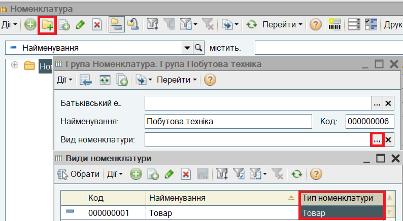
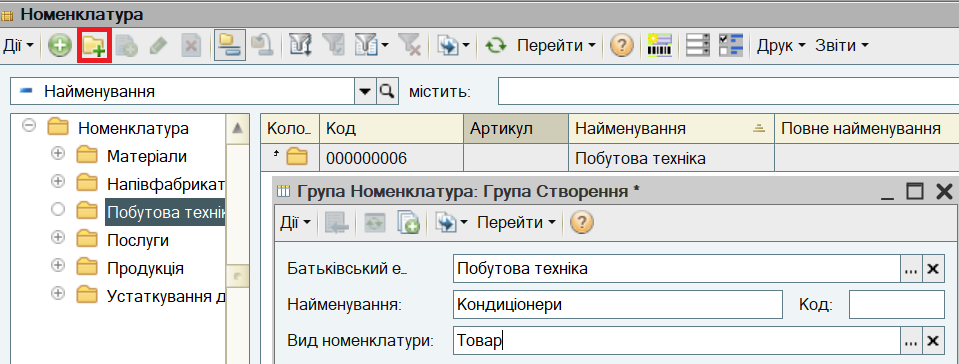
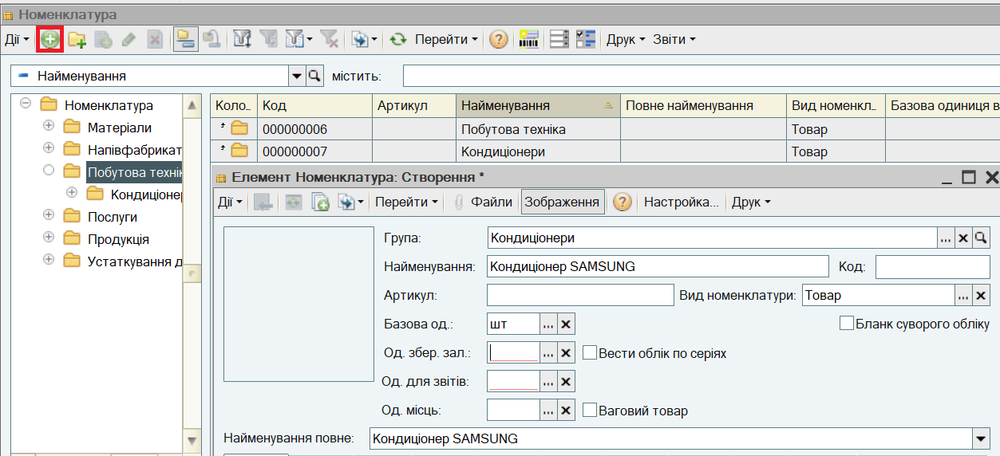
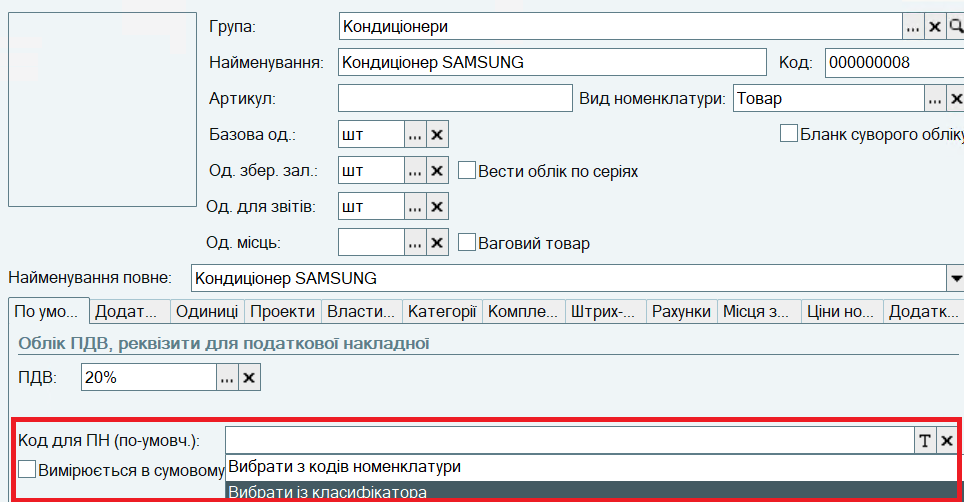
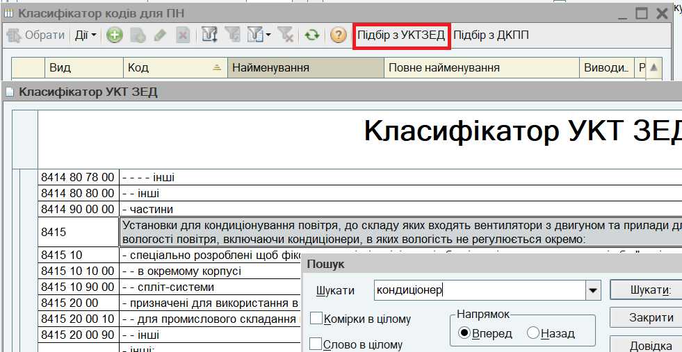
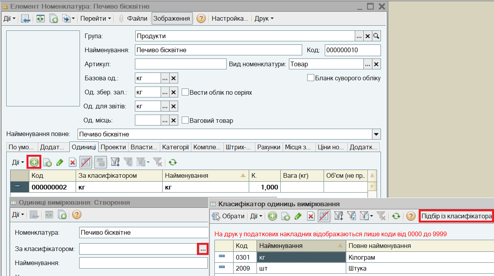
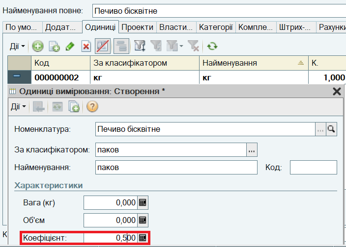
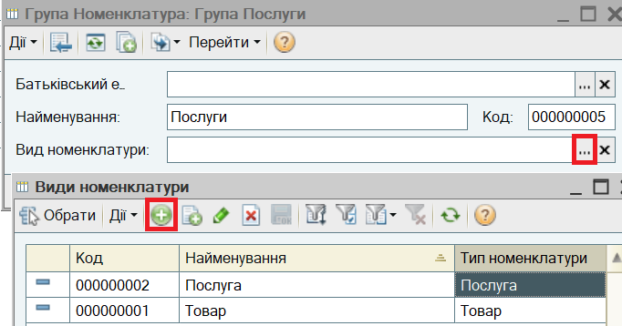

, відкриється список Види номенклатури. Додайте вид номенклатури натисканням кнопки
, відкриється список Види номенклатури. Додайте вид номенклатури натисканням кнопки  (або натисніть клавішу Insert або виберіть пункт меню Дії - Додати). Додайте вид номенклатури з Типом номенклатури Товар:
(або натисніть клавішу Insert або виберіть пункт меню Дії - Додати). Додайте вид номенклатури з Типом номенклатури Товар:
3. Для групи товарів "Побутова техніка" створіть дві підгрупи: "Кондиціонери" і "Телевізори". Для них також зазначте Вид номенклатури "Товар".

4. Створіть в групі "Кондиціонери" номенклатуру "Кондиціонер SAMSUNG". Зазначте Базову одиницю "шт.". Натисніть кнопку Записати.

|
ПРИМІТКА |
5. Якщо організація є платником ПДВ, зазначте Ставку ПДВ, за якою зазвичай оподатковується товар.
Зазначте код УКТЗЕД, що буде підставлятися в податкові накладні. Для цього потрібно натиснути кнопку вибору біля реквізиту Код для ПН (по умовчанню) і вибрати варіант Вибрати із класифікатора.


|
ПОРАДА |
6. Аналогічним чином створіть в групі "Телевізори" номенклатуру "Телевізор Samsung".
7. Створіть в групі "Продукти" номенклатуру "Печиво бісквітне" з Базовою одиницею кг.
Товар може продаватися як на вагу, так і в упаковках по 0.5 кг.
На закладці Одиниці додайте нову одиницю вимірювання. Для неї необхідно зазначити значення За класифікатором за кнопкою вибору  . Відкриється "Класифікатор одиниць вимірювання", який можна заповнити за кнопкою Підбір із класифікатора.
. Відкриється "Класифікатор одиниць вимірювання", який можна заповнити за кнопкою Підбір із класифікатора.

8. Додайте в класифікатор одиницю вимірювання "паков", додайте її для номенклатурі на закладці Одиниці. Зазначте для нової одиниці вимірювання Коефіцієнт 0,5.

9. Для групи "Послуги" зазначте Вид номенклатури "Послуга" типу Послуга, для цього внесіть Вид номенклатури "Послуги" в довідник:

10. Створіть в групі "Послуги" номенклатуру "Доставка".